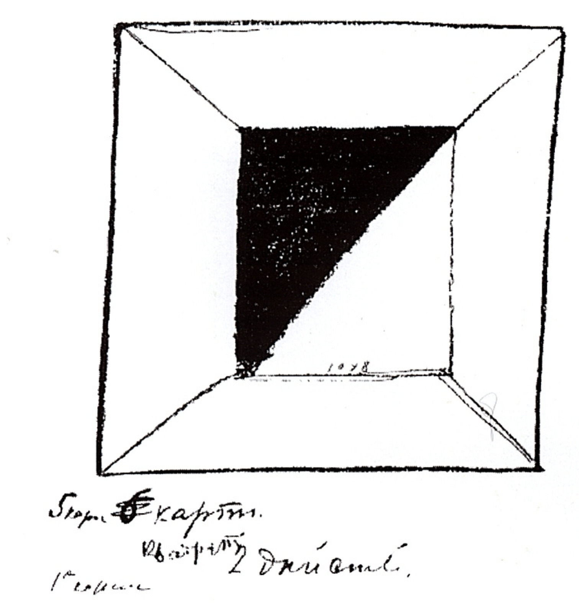
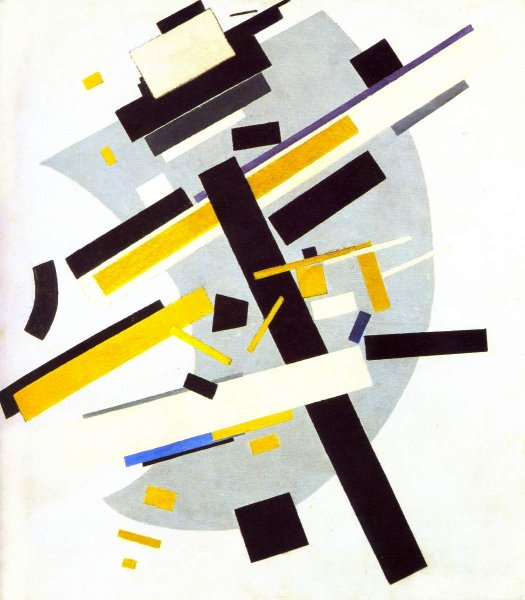

Filosofía del arte no-objetivo
Malevich no solo fue pintor, sino también un teórico que buscó redefinir los fundamentos del arte moderno. En sus escritos, proclamó la llegada de un mundo no-objetivo, en el que las formas geométricas puras expresarían la supremacía del espíritu sobre la materia.

Del objeto a la sensación pura
En su manifiesto Del cubismo y el futurismo al suprematismo (1915), Malevich explica que el arte debía liberarse del peso de la representación. Para él, la tarea del artista consistía en revelar la energía interior del color y la forma, más allá de la descripción del mundo visible. El arte debía expresar la experiencia pura, no la apariencia.
El mundo no-objetivo
En su obra teórica El mundo no-objetivo (1927), Malevich desarrolla una filosofía donde la pintura se convierte en una forma de pensamiento espiritual. La línea, el plano y el color son elementos de un nuevo universo sin objetos, donde la lógica del sentimiento reemplaza la lógica de la razón.
Este nuevo mundo no está sometido a las leyes de la gravedad ni de la perspectiva. Es un espacio libre, sin centro ni jerarquías, donde el espectador puede experimentar la libertad interior del ser humano.
El arte como vía espiritual
Malevich creía que el arte debía ocupar el lugar de la religión en la sociedad moderna. Su pintura, despojada de toda narrativa, buscaba una dimensión trascendental: un lenguaje universal capaz de comunicar lo absoluto a través de formas simples. Para él, el Cuadrado negro era el “ícono de una nueva era”.
Tiempo, movimiento y percepción
A diferencia del cubismo o el futurismo, el suprematismo no pretende representar el movimiento, sino detenerlo en una forma absoluta. Cada composición de Malevich es un equilibrio entre reposo y dinamismo, entre la inmovilidad del color y la tensión del espacio. Esta búsqueda anticipa la abstracción geométrica, el minimalismo y el arte conceptual del siglo XX.
Herencia teórica
Las ideas de Malevich influyeron profundamente en la Bauhaus, en artistas como Kandinsky, Mondrian y los constructivistas soviéticos. Su visión del arte como lenguaje autónomo continúa siendo una referencia en la teoría contemporánea del diseño y la estética visual.
Su pensamiento trasciende la pintura: propone una ética de la forma, donde el arte es el reflejo de la libertad humana y del poder del pensamiento abstracto.